高级数据与算法分析——Part 2
Inverted File Index
应用：信息检索，搜索引擎
搜索引擎的搜索方式？
-
Solution 1: 遍历寻找搜索的关键字（太耗时）
-
Solution 2: 矩阵存储（太耗空间） 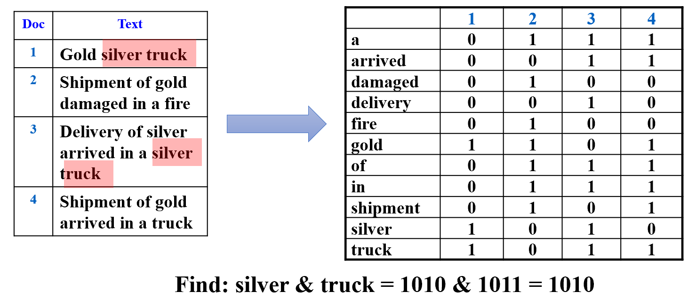
磁带假设：词和词没有顺序
-
Solution 3: Inverted File Index（参考图论，将矩阵用邻接表表示） 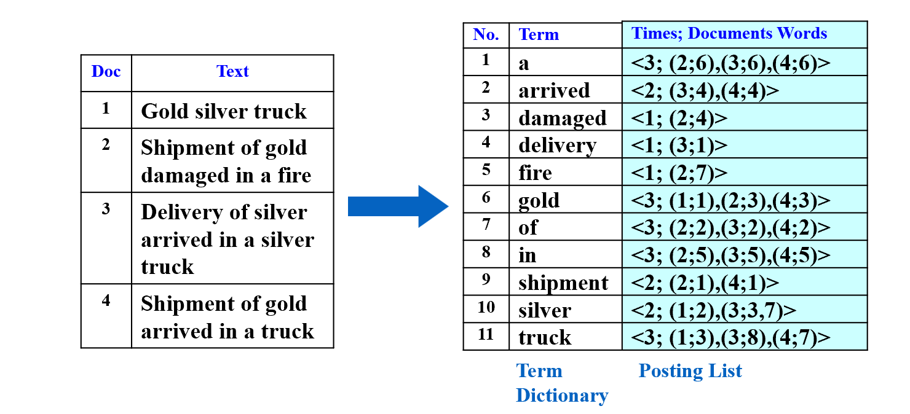 以a为例：出现次数3次，分别出现在第二个网站的第六个，第三个网站的第六个，第四个网站的第六个。
因此链表里存储的是<3,(2;6),(3;6),(4,6)>
while ( read a document D ) {
while ( read a term T in D ) {
if ( Find( Dictionary, T ) == false )
Insert( Dictionary, T );
Get T’s posting list;
Insert a node to T’s posting list;
}
}
Write the inverted index to disk;
Optimize
-
对term进行处理
-
只留下词根
-
停用词（stop words）过滤：the、a、what...——成本大，收获低
-
-
加速搜索
-
哈希
-
搜索树
Discussion: 哈希和搜索树各自的优缺点？
-
-
内存优化
-
内存不够时，把写好的词典放入disk
-
释放内存，创建一个新的词典
-
最后归并排序
-
-
存储优化
-
disk都不够时（web-scale的数据）
-
Solution 1：将磁盘按字母序放在不同电脑里
-
Solution 2：Document-Partitioned index
每个分区代表一个单独的文档集合，其中包含了该文档集合中的所有关键词以及它们对应的频率信息。这种分区的目的是为了提高查询效率，因为对于给定的查询，系统只需要访问与其相关的文档分区即可。
- 好处：易于扩展、便于并行、即使一个集合不可用都能返回结果（虽然可能不是最佳的
-
-
Dynamic indexing
-
物理删除代价昂贵——做新旧标记
-
分为一个Main list和new list，已存在的词放在Main list里，新词放在new list里
-
-
Compression(压缩)
将空格和停用词去除，将词汇表线性存储，记录每个单词首字母位置差序列 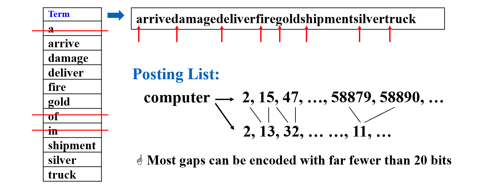
Measures
几个评价指标：
-
索引的快慢
-
搜索的快慢
-
对复杂语言的处理能力
| 文档 | 相关 | 不相关 |
|---|---|---|
| 检索到 | \(R_R\) | \(I_R\) |
| 未检索 | \(R_N\) | \(I_N\) |
精确率：检索到的正确样本在检索到的样本上的比例 $$ Precision\ P = R_R / (R_R + I_R) $$ 召回率：检索到的正确样本在所有正确样本上的比例 $$ Recall \ R = R_R / (R_R + R_N) $$
Leftist Heaps
review: 堆的操作（以最小堆为例）
-
插入 —— 插到完全二叉树最后的位置，跟父节点比较，比父节点小则交换，直到比父节点大（\(O(logn)\)）
-
删除（最小值） —— 删除根，将最后位置的元素提到根上，再与两个儿子比较，把最小的儿子换到上面，直到两个儿子都比当前值大（\(O(logn)\)）
-
建堆 —— 找到最后一个节点的父节点，从这个节点开始依次向前（以数组形式存储），把小儿子提上来（\(O(n)\)）
-
合并 —— 复杂度相当于重新建堆（\(O(n)\)，n为两个堆size之和）
堆有很好的顺序性质，合并操作应能简化
左偏堆（Leftist Heaps）—— 一种不平衡的二叉树，也是堆（即根是子树中最大/小的元素）。利用结构的不平衡，加速堆的合并
Definition
-
有两个儿子的节点是内部节点，其余为外部节点
-
null path length, Npl(x): 到外部节点的最短路径长度
-
定义Npl(null) = -1
- 从定义可以看出 $$ Npl(X) = min \{ Npl(LeftChild) + 1 ,Npl(RightChild) + 1 , \} $$
- 左偏树 —— 即所有的节点，左儿子的Npl大于等于右儿子的Npl
Theorem: 右路径长度为 r 的左偏树，至少有 \(2^r-1\) 个节点
（右路径是从根节点开始，一直往右儿子遍历经过的所有节点（即右儿子的右儿子的右儿子······构成的路径），路径长等于经过的节点数）
运用数学归纳法
r = 1 时，只有一个根节点，显然成立
r = k 时，假设结论成立
r = k + 1 时，
因为左偏堆要求左边节点的 Npl 大于等于右边节点，那么只有一直往右，才能以最短路径到达叶子节点。所以根节点的 Npl 长与右路径相关。
因此 Npl(root) = k，Npl(RightChild) = k - 1，右子树的右路径为 k，由假设，右子树至少有\(2^k-1\)个节点
因为左儿子的 Npl 不比右儿子小，我们想求节点数的下界，因此设 Npl(LeftChild) = k - 1
同理（根节点的 Npl 长与右路径相关），左子树的右路径为k，因此左子树至少有\(2^k-1\)个节点
总的节点数 = 左子树 + 右子树 + 根 = \(2^{k+1}-1\)，假设成立
Implementation
两个堆的合并
方法一：递归
-
Merge( H1->Right, H2 )
先判断哪个堆顶的元素小，再把元素大的堆和小的右儿子 Merge
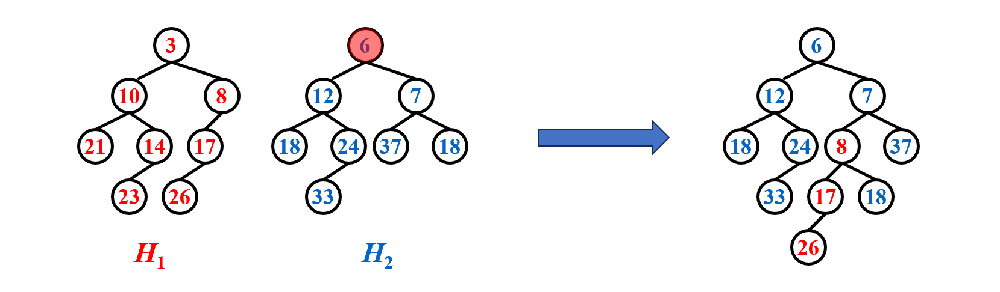 -
Attach( H2, H1->Right )
将 Merge 好的堆接到原来的右儿子位置上（递归假设 Merge 后的堆已经是左偏堆，因此只有根可能不符合左偏堆的定义） 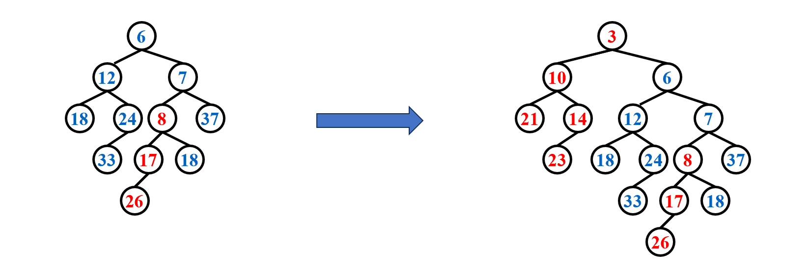
-
Swap(H1->Right, H1->Left ) if necessary
因此只要查看左儿子和右二子的 Npl，来判断是否需要交换，即可保证结果是左偏堆 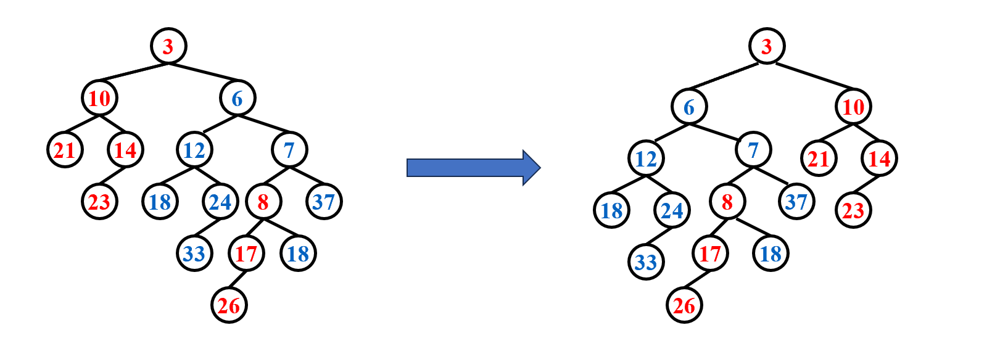
PriorityQueue Merge ( PriorityQueue H1, PriorityQueue H2 )
{
if ( H1 == NULL ) return H2;
if ( H2 == NULL ) return H1;
// 找到堆顶元素小的堆
if ( H1->Element < H2->Element ) return Merge1( H1, H2 );
else return Merge1( H2, H1 );
}
static PriorityQueue
Merge1( PriorityQueue H1, PriorityQueue H2 )
{
if ( H1->Left == NULL ) /* single node */
H1->Left = H2; /* H1->Right is already NULL
and H1->Npl is already 0 */
else {
H1->Right = Merge( H1->Right, H2 ); /* Step 1 & 2 */
if ( H1->Left->Npl < H1->Right->Npl )
SwapChildren( H1 ); /* Step 3 */
H1->Npl = H1->Right->Npl + 1;/* 更新 Npl */
} /* end else */
return H1;
}
方法二：迭代
-
Sort the right paths without changing their left children
用下面这个例子说明：先看 3 和 6，应该将 6 接到 3 的下面，因此保持 3 的左子树不变，把 6 跟右子树比较。
右子树中，6 比 8 小，因此保持 6 的左子树不变，把 6 接到 3 上，再比较 6 的右子树和 8，以此类推 ...... 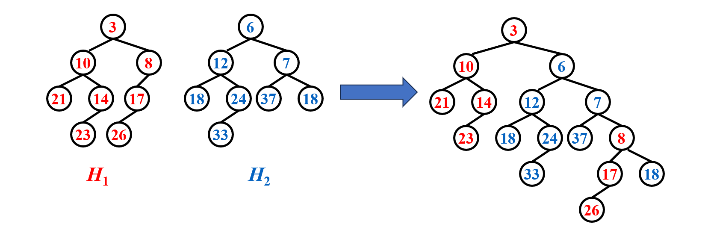
-
Swap children if necessary
从下到上回溯，发现 7 和 3 不满足，交换他们的孩子。（注意更新 Npl） 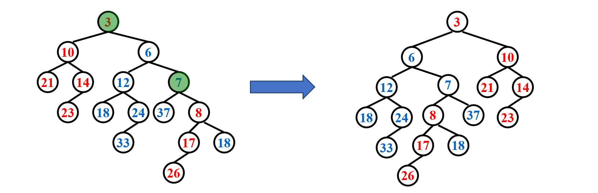
PriorityQueue Merge ( PriorityQueue H1, PriorityQueue H2 )
{
if ( H1 == NULL ) return H2;
if ( H2 == NULL ) return H1;
PriorityQueue root;
// 初始化
if(H1->Element < H2->Element){
root = H1;
push(H1);
H1 = H1->Right;
}else{
root = H2;
push(H2);
H2 = H2->Right;
}
// 迭代地将小的元素插到当前根的右边，并成为新的根
While(H1 && H2){
if(H1->Element < H2->Element){
root -> Right = H1;
root = root -> Right;
push(H1);
H1 = H1->Right;
}else{
root -> Right = H2;
root = root -> Right;
push(H2);
H2 = H2->Right;
}
}
if(H1) root -> Right = H1;
if(H2) root -> Right = H2;
PriorityQueue temp;
// 回溯，判断是否需要交换儿子，更新Npl
While(temp = pop()){
root = temp;
if(root->Left && root->Right){
if(root->Left->Npl < root->Right->Npl) Swap(root);
root->Npl = root->Right->Npl + 1;
}else if(root->Right){
root->Left = root->Right;
root->Right = NULL;
root->Npl = 0;
}else root->Npl = 0;
}
return root;
}
delete min
Step 1: Delete the root
Step 2: Merge the two subtrees
Skew Heaps
左偏树合并时不判断 Npl，直接交换左右子树，就是斜堆。（除右路径上最大的节点不交换）
可以保证均摊代价
Example: insert 15
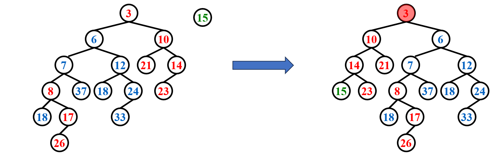
-
优点：不用存 Npl，不用判断
-
开放性问题：如何保持右路径长度
均摊分析（势能法）
-
势能函数\(\Phi(D_i)\) = 整个树中重节点的个数
-
重节点：右子树节点个数严格大于左子树的节点
-
只有右路径节点的轻重会改变，因此只下面只计算右路径的势能（其余抵消）
- 操作后，重节点一定变轻，轻节点不一定变重，为求上界，假设轻节点都变重（势能函数就会变大，存储更多势能）
$$ \Phi(D_N) \leq l1 + l2 + h
$$
- 最坏情况：Merge, Insert, DeleteMin 都是 O(N)
- 均摊情况：都是 O(logN)
Binomial Queue
二项优先队列
- 建堆的时间复杂度：\(O(n)\)，均摊\(O(1)\)
- 插入的时间复杂度：\(O(logn)\)
- 因此我们想优化插入
定义
A binomial queue is not a heap-ordered tree, but rather a collection of heap-ordered trees, known as a forest. Each heap-ordered tree is a binomial tree.
- A binomial tree of height 0 is a one-node tree.
- A binomial tree, \(B_k\), of height k is formed by attaching a binomial tree, \(B_{k – 1}\), to the root of another binomial tree, \(B_{k – 1}\).
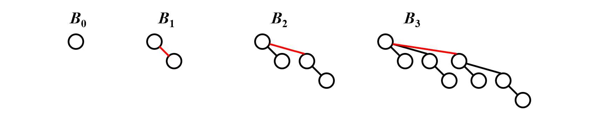
观察得：\(B_k\) consists of a root with k children, which are . \(B_k\) has exactly \(2^k\) nodes. The number of nodes at depth d is \(C_k^d\) .
任何大小（节点数）的二项队列可以被二项树唯一表示
Example
操作
- FindMin: 比较每个根节点大小，找到最小的。节点数为N，则最多有\(\lceil logN\rceil\)个树，时间复杂度为\(O(logN)\).
- 可以记录最小的根，并在变更时更新。这时的时间复杂度为\(O(1)\)。
- Merge: 类似于二进制
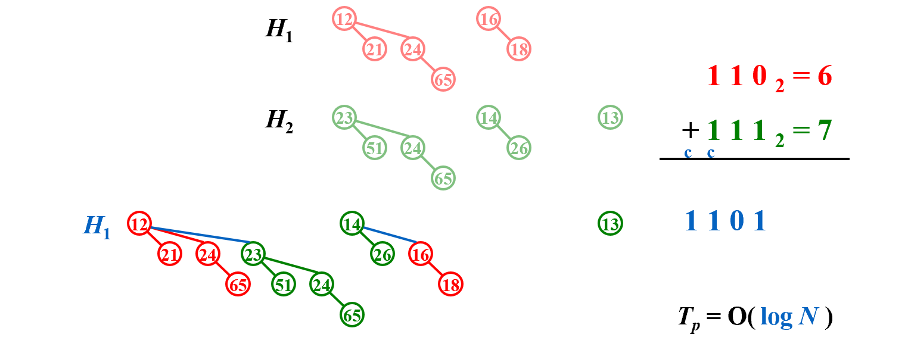
- Insert: Merge的特殊情况——Merge(\(H, B_0\))
- DeleteMin:
- step 1: FindMin—— (\(O(logN)\))
- step 2: 在二项队列中删除\(B_k\)，得到H' ——(\(O(1)\))
- step 3: 在\(B_k\)中删除根，将其所有子树作为新的队列H''—— (\(O(logN)\))
- step 4: Merge(H', H'') ——(\(O(logN)\))
实现
左儿子右兄弟——节省空间，不用考虑随机访问孩子
typedef struct BinNode *Position;
typedef struct Collection *BinQueue;
typedef struct BinNode *BinTree; /* missing from p.176 */
struct BinNode
{
ElementType Element;
Position LeftChild;
Position NextSibling;
} ;
struct Collection
{
int CurrentSize; /* total number of nodes */
BinTree TheTrees[ MaxTrees ];
} ;
DeleteMin
DeleteMin(BinQueue H)
{
int min = FindMin(H);//min的元素在数组中的位置
BinTree OldRoot = H->TheTrees[min];
H->TheTrees[min] = H->TheTrees[0];//指向哨兵
BinQueue new_H = Malloc...
while(NextSibling){
//创建新队列
}
free(OldRoot);
Merge(H, new_H);
}
分析
- 1/2：不合并
- 1/4：合并一次
- 1/8：合并两次
势能法：
- \(\Phi(i)\) = i次插入后的树的数量